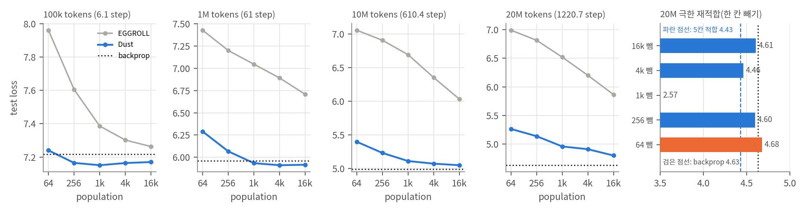
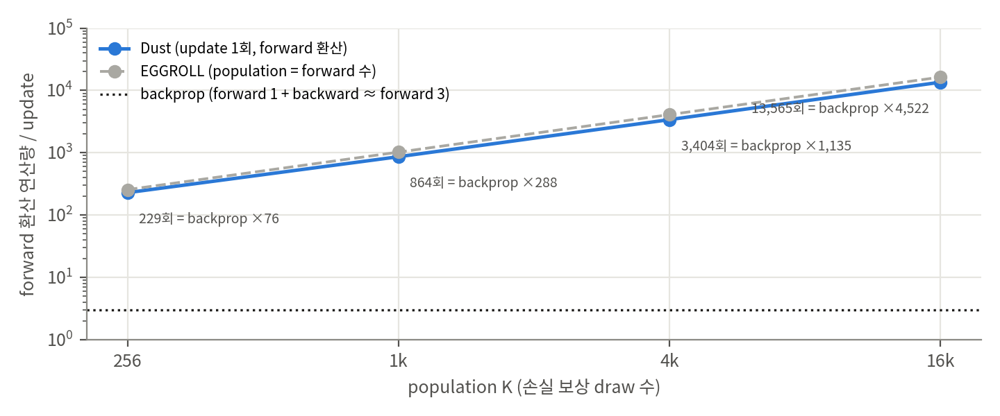

Table 1을 다시 그림(제목의 step 수는 우리 계산). 오른쪽: 20M power law 극한의 한 칸 빼기 재적합.

update 한 번의 연산량을 forward 횟수로 환산(부록 Table 3·4의 배분과 '블록 l부터 재계산' 규칙).
paper/에 저장했습니다.b20f7c0(2026-10-06)입니다.Transformer 언어모델을 역전파 없이 forward만으로 사전학습하는 0차(zeroth-order) 방법 Dust를 제안합니다. 두 가지가 핵심입니다.
저자들의 주장(TL;DR)은 다음과 같습니다.
선형층 y_t = W x_t의 출력에 y_t → y_t + σ a_t (a_t ~ N(0, I))를 모든 토큰에 독립적으로 더합니다.
| 예산 | Dust 64 | 256 | 1k | 4k | 16k | Dust ∞(fit) | EGGROLL 16k | Backprop |
|---|---|---|---|---|---|---|---|---|
| 100k | 7.240 | 7.165 | 7.151 | 7.164 | 7.170 | 7.161 | 7.263 | 7.216 |
| 1M | 6.290 | 6.067 | 5.934 | 5.911 | 5.916 | 5.892 | 6.708 | 5.959 |
| 10M | 5.397 | 5.231 | 5.111 | 5.072 | 5.049 | 5.013 | 6.033 | 4.989 |
| 20M | 5.265 | 5.139 | 4.960 | 4.912 | 4.802 | 4.431 | 5.865 | 4.633 |
굵은 값은 backprop보다 낮은 칸입니다. 저자 해석은 다음과 같습니다.
1M 토큰에서 세 방법을 모두 Adam으로 다시 튜닝했습니다. Dust의 극한은 5.248(구간 5.17–5.30)로, backprop보다 낮다고 보고합니다. 그림에 표시된 backprop 값은 5.361입니다. EGGROLL은 Adam으로 거의 나아지지 않습니다.
10M 토큰에서 2M, 7.3M, 38M, 243M 네 가지 크기를 비교했습니다. 저자 해석은 다음과 같습니다.
backprop으로 학습한 10M, 100M, 1B 토큰 체크포인트에서, Dust 추정치와 backprop gradient의 cosine을 population 64–128k에 걸쳐 쟀습니다.
03, 04에서 근거)03 §2).03 §1).03 §3).03 §4).03 §5).03 §1).재실행 방법:
python3 analysis/table_check.py
python3 analysis/dust_toy.py
python3 analysis/plot_figures.py
결과는 table_check_results.json과 dust_toy_results.json에 있고, 그래프는 report/figures/에 있습니다.
table_check.py V1). 맞는 수치의 예는 다음과 같습니다.
실험이 놓인 구간은 다음과 같습니다.
| 예산 | step 수 (16,384 토큰/step) | 토큰/파라미터 | backprop 손실 | ln V = 8.32 대비 줄어든 비율 |
|---|---|---|---|---|
| 100k | 6 | 0.003 | 7.216 | 13% |
| 1M | 61 | 0.027 | 5.959 | 28% |
| 10M | 610 | 0.27 | 4.989 | 40% |
| 20M | 1,221 | 0.53 | 4.633 | 44% |
부록 Table 3·4의 draw 배분과 "블록 l부터 다시 계산" 규칙으로 update 한 번의 연산량을 forward 횟수로 환산했습니다(table_check.py R2).
| population K | forward 환산 / update | backprop step(≈ forward 3회) 대비 | 같은 K의 EGGROLL 대비 |
|---|---|---|---|
| 256 | 229 | 76배 | 0.89 |
| 1k | 864 | 288배 | 0.84 |
| 4k | 3,404 | 1,135배 | 0.83 |
| 16k | 13,565 | 4,522배 | 0.83 |
Table 1의 20M 다섯 칸에서 한 칸씩 빼고 다시 적합했습니다(report/figures/ladders.png).
| 뺀 칸 | 64 | 256 | 1k | 4k | 16k | (모두 사용) |
|---|---|---|---|---|---|---|
| 극한 | 4.679 | 4.599 | 2.567 | 4.463 | 4.608 | 4.434 |
Table 8의 법칙에 학습 population K = 16,384를 넣으면 다음과 같습니다(report/figures/cosine_16k.png).
| 층 | cos@16k | c_max | c_max의 90%에 필요한 K |
|---|---|---|---|
| LM head | 0.98 | 1.00 | 178 |
| Attn out | 0.57 | 0.87 | 5,073 |
| MLP out | 0.51 | 0.88 | 7,418 |
| Token emb | 0.49 | 0.73 | 4,574 |
| MLP in | 0.43 | 0.86 | 11,357 |
| Attn Q | 0.42 | 1.00 | 18,000 |
| Value gate | 0.34 | 0.67 | 11,227 |
| Attn V | 0.26 | 0.88 | 40,763 |
| Value emb | 0.18 | 1.00 | 116,217 |
| Attn K | 0.16 | 1.00 | 144,633 |
σ → 0의 선형 근사에서 한 draw의 보상은 r_t ≈ σ a_tᵀ g_t입니다. 그러면 다음이 성립합니다.
이를 가중치 gradient Ĝ = Σ_t ĝ_t x_tᵀ로 모으면 다음 식이 나옵니다.
cos(Ĝ, G) ≈ 1 / √(1 + c/K), c = (d_out + 1) · Σ_t ‖x_t‖² ‖g_t‖² / ‖Σ_t g_t x_tᵀ‖²
toy에 토큰 사이 영향(인과 평균 혼합, 세기 β)을 넣었습니다(T2).
| β | cos(국소 gradient, 전체 gradient) | γ = 0 적합 c_max | γ = 1 적합 c_max | γ = 1의 c / γ = 0의 c |
|---|---|---|---|---|
| 0 | 1.000 | 0.995 | 1.000 | 171배 |
| 1 | 0.936 | 0.933 | 1.000 | 177배 |
| 3 | 0.694 | 0.692 | 1.000 | 216배 |
논문은 Dust가 "고차 곡률을 암묵적으로 탐색해 평평한 영역으로 간다"는 가설을 제시합니다. 다른 설명도 가능합니다.
시드별 값이 없어서 100k의 차이(0.05–0.07)가 시드 변동보다 큰지도 판단할 수 없습니다.
b20f7c03eac630b6441ba6f254128c1761dc45ad(2026-10-06), MIT 라이선스dust.py 607줄, model.py 201줄, baselines/backprop.py 148줄code_official/에 clone했고, git에서는 제외합니다.| 항목 | 논문 | 코드 | 위치 |
|---|---|---|---|
| draw 배분 (K = 16,384, 1M) | 부록 Table 3·4 | writers [38, 32, 16, 10, 6, 4, 2, 2] × 64 = [2432, …, 128], hubs [6, 6, 4, 2, 2, 2, 2, 2] × 64, embedding 640, local (q, v, gate, k, ve) = (128, 1280, 384, 768, 512), head 65,536 | recipe() |
| 10M@16k 별도 배분과 γ | 부록 Table 4, F: γ = 0.99 | writers [34, 28, 14, 8, 6, 4, 2, 2] × 64, hubs [12, 10, 8, 4, …] × 64, gamma=0.99 |
DEFAULT_CONFIGS['10M']['allocation'] |
| K의 정의 | writer·MLP·attention 출력·embedding의 손실 보상 draw 합 | 2·7,040 + 1,664 + 640 = 16,384 (10M@16k도 16,384) | table_check.py V4에서 재구성 |
| 잡음 크기 | 0.2, 깊은 절반 attention 출력 0.4, 내부 0.05, head 0.05, 잔차 스칼라 0.03 | 같음 | step(), local_errors, head_error, scalar_gradients |
| 가중치 gradient | Ĝ = Σ_t ĝ_t x_tᵀ, embedding은 scatter-add | reassemble() |
|
| attention 내부 보상 | Eq. 4, Q는 자기 토큰, 나머지는 γ로 미래 토큰 합산 | local_errors: score → credit 행렬(γ^lag, 창 안) |
|
| 잔차 스칼라 | 2L개는 가중치 공간 ES | 양측(antithetic) ES 8 draw | scalar_gradients |
| 학습 step | 1M = 61, 10M = 610 | 같음 (배치 8 × 2,048) | DEFAULT_CONFIGS |
| 학습률 그룹 | 부록 Table 6: 토큰 임베딩 1000, value emb 0.3, 잔차 0.03 | 같음. backprop은 임베딩 1000, 나머지 base | make_optimizer (두 파일) |
| backprop 기준선의 공정성 | 같은 모델·데이터·평가 | 같은 make_model(출력 투영 초기화 포함), 같은 데이터 순서(seed + 1), 같은 평가 |
baselines/backprop.py |
| # | 항목 | 논문 | 코드 | 영향 |
|---|---|---|---|---|
| D1 | 보상 baseline | c_s = ℓ̃_s − ℓ_s (같은 묶음 draw 평균과의 차, Eq. 1 앞) | 깨끗한 손실 − 섭동 손실을 구한 뒤, 묶음(n ≥ 2) 안 평균을 뺌. n = 1이면 중심화 없음 | n = 1이면 논문 식은 0이 되므로 코드가 맞는 구현. 묶음 중심화는 추정 크기를 (1 − 1/n)배로 줄임(03 §5.3) |
| D2 | head 보상의 baseline | 명시 없음 | draw 묶음이 아니라 배치의 8개 시퀀스에서 같은 위치의 평균을 뺌(reward.mean(1)) |
다른 시퀀스의 손실을 baseline으로 쓰는 셈. 편향은 작지만 논문 서술과 다름 |
| D3 | gate의 섭동 | 일반적인 한쪽 섭동으로 서술 | gate만 양측 차분(z + σa, z − σa), 나눗셈 2σ | 분산 감소. 논문에 없음 |
| D4 | writer 쌍 | "층 종류마다 다른 pass"(§2.3) | attn.c_proj와 mlp.c_proj를 같은 pass에서 함께 흔듦(부록 Table 3의 "Writer pair") | 같은 블록의 두 출력 사이에 간섭이 생김. toy에서 함께 흔들면 c가 1.6배(03 §5.3) |
| D5 | 지원 범위 | 100k, 1M, 10M, 20M × 64–16k, Adam, 모델 크기 4종 | 1M·10M × 256–16k, SGD만. 64 draw(n = 1), 100k, 20M, Adam, 모델 크기 설정 없음 | 논문 핵심 수치 중 20M 극한(4.431), Adam 결과, 과대매개변수화는 공개 코드로 재현할 수 없음 |
| D6 | EGGROLL-Transformer | 같은 구조로 구현, 자체 grid 튜닝 | 저장소에 없음 | Table 1의 EGGROLL 행과 Table 2 외삽을 확인할 수 없음 |
| D7 | 시드·튜닝 절차 | seed 42로 grid, 상위 후보에 43·44 (부록 F) | --seed 인자 하나. grid 스크립트 없음 |
3 시드 평균과 선택 절차를 재현하려면 직접 작성해야 함 |
| D8 | 실행 최적화 | 블록 l부터 재계산, GPU 분할 | 최소 구현이라 블록 l 섭동도 forward 전체를 다시 계산(self.losses(x, y)) |
결과는 같고 시간만 더 듦. 연산량 환산(03 §2)은 논문 방식(블록 l부터) 기준 |
| # | 확인 | 결과 |
|---|---|---|
| V1 | 본문 수치 12개(§3.2, §4.1, §4.2) ↔ 부록 표 | 모두 일치 |
| V2 | Table 1의 ∞ 행을 power law로 재적합 | 4칸 모두 ±0.003 이내로 일치. 다만 20M은 한 칸 빼기에 매우 민감(03 §3) |
| V3 | Table 2(EGGROLL 외삽) | 직선 적합 6칸 일치, power law는 1M만 일치(10M 10,200배 vs 16,000배, 20M 5,700배 vs 8,100배) |
| V4 | 코드의 draw 배분 ↔ 부록 Table 3·4 | 8개 항목 모두 일치, K = 16,384 |
판정: ✅ 지지됨 · ⚠️ 부분적으로 지지되거나 해석에 주의 · ❌ 근거 부족
| # | 주장 (위치) | 판정 | 근거 |
|---|---|---|---|
| C1 | Transformer 사전학습에서 backprop과 경쟁할 수 있는 최초의 0차 방법 (TL;DR, §1) | ⚠️ | 같은 토큰 수에서 손실이 비슷한 것은 맞음. 다만 실험은 최대 1,221 step, 토큰/파라미터 0.53 이하이고, 연산은 backprop의 수천 배(03 §1–2) |
| C2 | population이 크면 여러 설정에서 backprop보다 낮다 (§3.2) | ⚠️ | 100k(6 step), 1M(61 step)에서만 측정값으로 낮음. 차이 0.04–0.07이고 시드별 값 없음. 10M·20M은 측정값이 모두 backprop보다 높음 |
| C3 | 20M 극한 4.431 < backprop 4.633 (§3.2, Fig. 2) | ❌ | 한 칸 빼고 재적합하면 2.57–4.68. 64 칸을 빼면 backprop보다 높음. 맨 위 칸은 별도 튜닝(03 §3). 저자도 "측정된 극한이 아님"이라고 씀 |
| C4 | 가중치 공간 ES보다 10³–10⁴배 효율 (TL;DR, 부록 D) | ✅ (population 기준) | 외삽 산술은 대체로 재현. "효율"은 같은 손실에 필요한 population 배수이고, draw당 연산은 0.82 forward라 연산 기준으로도 비슷함 |
| C5 | Adam에서도 backprop보다 극한이 낮다 (§3.3) | ⚠️ | 그림만 있고 표가 없음(backprop 5.361, Dust 극한 5.248). 공개 코드에 Adam 설정 없음(D5) |
| C6 | 큰 모델이 population 효율이 더 높다 (§4.1) | ⚠️ | 2M → 38M은 맞음. 243M은 모든 population에서 38M보다 나쁘고, backprop과의 차이도 64 draw에서 0.525 → 0.671로 커짐. 243M에게 10M 토큰은 토큰/파라미터 0.04 |
| C7 | population이 커질수록 gradient가 backprop에 정렬, 1B 토큰까지 유지 (§4.2) | ✅ | 법칙 적합 RMSE 0.0032–0.0367 확인. 다만 학습 population(16k)의 cosine은 head를 빼면 0.16–0.57(03 §4) |
| C8 | 근사가 backprop과 정확히 같지 않은 것이 오히려 좋은 성질이다 (§4.2) | ❌ (해석) | c_max < 1의 주요 원인은 자기 토큰만 보상하는 구조적 편향으로 설명됨(toy에서 c_max = cos(국소, 전체 gradient)). 더 좋은 궤적이라는 근거는 C2의 극초기 결과뿐(03 §5–6) |
| C9 | 활성값 섭동이 가중치 섭동보다 population을 싸게 만든다 (§2.1) | ✅ | toy에서 같은 forward 수로 cosine 0.41 vs 0.18(K = 64). 이론상 분산이 파라미터 수가 아니라 d_out × 토큰 비정합도에 비례 |
parser.error('Training requires a CUDA GPU.')).dust_toy.py): 추정기 식, cosine 법칙, γ의 편향-분산 교환을 확인했습니다(이 문서 §4의 C8, C9 근거).[가중치 공간 0차 최적화] [활성값(node) 섭동]
Random search / Gaussian smoothing Widrow & Lehr 1990 (MADALINE, node perturbation)
(Nesterov & Spokoiny 2017) GEMINI (Le Cun, Galland, Hinton 1988): 잡음 주입 + 행렬 역변환
Evolution Strategies (Salimans et al. 2017) Werfel, Xie, Seung 2003: node vs weight perturbation의 학습 곡선
MeZO (Malladi et al. 2023): 미세조정 Scaling Forward Gradient with Local Losses (Ren et al. 2023)
ES at Scale (Qiu et al. 2026): 수십억 파라미터 Zoop (Hu et al. 2025): 출력 섭동 미세조정
ZO pretraining, KronZO (Allaire et al. 2025, 2026) multi-tangent forward gradient (Flügel et al. 2025)
EGGROLL (Sarkar et al. 2025): 저랭크 ES
└──────────────────────┬────────────────────────┘
Dust: 토큰마다 독립인 활성값 섭동 + 토큰 단위 보상 → "가상 population"
| 구성 요소 | 가져온 곳 | Dust에서 바뀐 점 |
|---|---|---|
| 출력 섭동 → 출력 오차 → 입력과의 외적 | node perturbation (Widrow & Lehr 1990; Werfel et al. 2003), GEMINI (1988) | 토큰별 보상, 층 종류별 분리 pass, 캐시된 forward에서 블록 l부터만 재계산 |
| 미래 토큰 credit (γ) | 강화학습의 할인 return과 같은 형태 | attention 내부(k, v, gate, ve)에만 γ ≈ 0.98–0.99 |
| attention 내부의 국소 목표 | Ren et al. 2023의 local loss와 같은 발상 | 손실 대신 추정된 attention 출력 오차와의 내적으로 보상(Eq. 4) |
| 보상 중심화 | ES의 baseline / fitness shaping | 같은 forward 묶음(n = 1–16 draw)의 평균을 뺌. 크기가 (1 − 1/n)배로 줄어듦(03 §5) |
| 모델 | modded-nanoGPT 계열(RMSNorm, RoPE, squared-ReLU, value embedding, sliding window) | 출력 투영을 0이 아닌 값으로 초기화(backprop 기준선도 같음) |
| 비교 ES | EGGROLL (Sarkar et al. 2025) | 같은 Transformer 구조로 다시 구현(EGGROLL-Transformer) |
| 방법 | 무엇을 흔드나 | 보상 단위 | forward 한 번의 정보 | Dust와의 차이 |
|---|---|---|---|---|
| EGGROLL | 가중치(저랭크) | 시퀀스 손실 | 구성원 1개/시퀀스 | Dust는 토큰마다 구성원 |
| MeZO | 가중치(전체) | 배치 손실 | 방향 1개 | 미세조정용. 사전학습에는 약함 |
| Forward gradient (Ren et al. 2023) | 활성값 + forward-mode AD | 국소 손실 | 방향 도함수(정확) | Dust는 AD 없이 유한 차분 |
| Zoop | 출력 | 토큰 손실 | 출력 오차 추정 | 미세조정, 국소 미분 사용 |
| KronZO | 가중치(Kronecker 구조) | 배치 손실 | 사전학습. 메모리 절감 중심 | |
| 예측 부호화 PC-ALM (Seely & Gould 2026) | 없음 | 국소 동역학 | 국소 미분 사용, 이미지 분류 |
03 §6). 논문은 이 연결을 언급하지 않습니다.| 논문 | 관계 |
|---|---|
DDPG (ddpg/) |
같은 "가우스 탐색 잡음 + 보상" 구조입니다. DDPG의 OU 잡음 분석(상관 시간, 정상 표준편차)이 Dust의 σ 선택과 대응합니다. Dust의 Eq. 2는 결정적 정책 gradient가 아니라 확률적 정책의 score function 추정에 해당합니다. |
GQKAE (gqkae/) |
미분하기 어려운 생성기(양자 회로)를 GRPO식 보상으로 학습합니다. Dust가 노리는 "미분 불가능한 구조 학습"의 한 사례입니다. |
| PINN 연구 전반 | PINN의 잔차 손실은 자동미분이 전제입니다. 시뮬레이터나 접촉이 섞여 미분할 수 없는 물리 모듈이 루프에 들어가면, Dust식 활성값 섭동이 대안이 될 수 있습니다. 다만 연산량 문제가 있습니다(03 §2). |
| GPT-as-Tactile-Policy, AW-0 | 둘 다 외부 프로그램(LLM 도구 호출, Code-as-Policies)이 정책 루프에 들어갑니다. 저자들이 Dust로 학습하고 싶다고 한 "외부 프로그램이 루프에 있는 망"의 예입니다. |